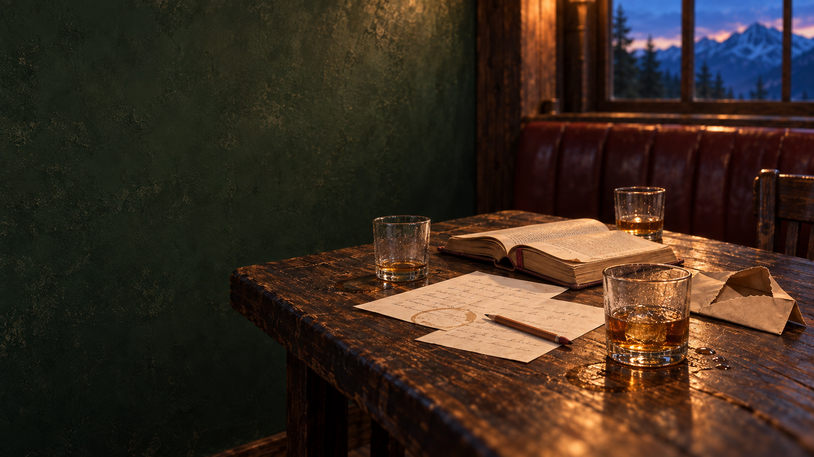

04 PLACES UNLOCKED
先点亮一个地点
地点不是坐标，是生活改变方向的地方。
选择地图上的光点，查看与它相连的真实记录。
HELLO, I'M JEAN.
用真实的经历，打开不同的世界。
01 / LIFE EXPERIMENTS
尝试、选择、走错，再重来。
CHAPTER 02 · CREATIVE LOGBOOK

CHAPTER 03
我的酒吧，我们的后话
有些故事不必写在开头。喝一杯，我们慢慢说。
CHAPTER 04
那些改变我的地方
世界仍在展开，而我也一直在路上。
开场主视觉已接入动态影像，01 至 04 可继续点击探索。